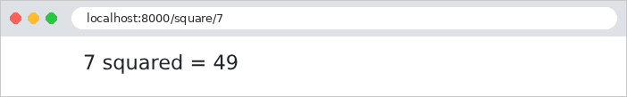
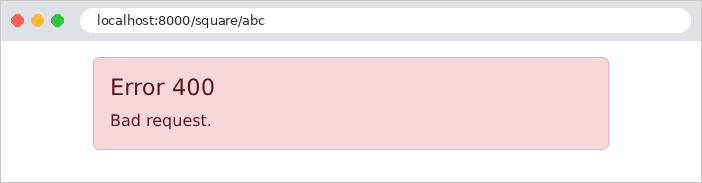
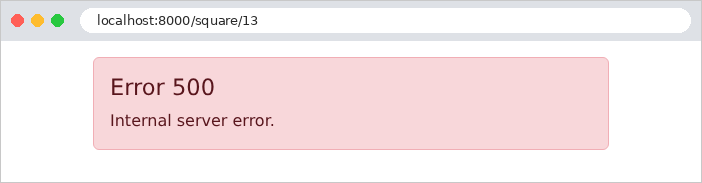

7. El ciclo de vida de una solicitud
Entre la llegada de una solicitud y el envío de su respuesta, [Laravel] pasa por varias etapas, y la aplicación puede intervenir en cada una. Ya hemos encontrado varias de ellas: los middleware (ejemplos 03, 12, 16, 22), el enlace de parámetros de ruta (ejemplo 12) y los manejadores de excepciones (ejemplos 08 y 12). Este capítulo las reúne en un único ejemplo, que muestra un mensaje en la consola en cada paso para que pueda observarse su orden:
- 1 y 7. Middleware global, ejecutado para todas las solicitudes, incluso antes del enrutamiento. Un componente de middleware envuelve el resto del procesamiento: ve pasar la solicitud antes y la respuesta después (ejemplo 03). [Laravel] instala varios de forma predeterminada (las cadenas vacías se convierten en [null], el modo de mantenimiento, las solicitudes pasan a ser CORS...), en el orden de la lista de middleware globales;
- Enrutamiento. [Laravel] busca la ruta que coincide con la URL y el método. Si ninguna coincide, se lanza una excepción [NotFoundHttpException] (404);
- Los middleware de grupo y de ruta, en orden: primero los del grupo [web] (cookies, sesión, errores de formulario, protección anti-CSRF, enlace de parámetros), luego los de la ruta. Uno de ellos, [SubstituteBindings], enlaza los parámetros de ruta (2, ejemplo 12). Los middleware de ruta (3 y 4) son el lugar adecuado para las comprobaciones específicas de ciertas acciones: así funciona el middleware [auth] del próximo capítulo. Si uno de ellos devuelve una respuesta sin llamar a [$next] (o lanza una excepción), el procesamiento se detiene allí: la acción no se llama;
- 5. La acción y la vista que genera;
- 6. El final de la cadena de middleware, en orden inverso: cada componente recibe la respuesta de [$next], puede modificarla (agregar un encabezado o una cookie) y debe devolverla;
- 8. Los métodos [terminate] de los componentes de middleware que los tienen, ejecutados después de enviar la respuesta al navegador. Ya no pueden modificar la respuesta: se usan para tareas de procesamiento que pueden esperar (escribir un registro, enviar estadísticas, etc.) sin hacer esperar al usuario;
- x. Manejadores de excepciones: una excepción lanzada por un componente de middleware, una acción o una vista se pasa al manejador ([render], en [bootstrap/app.php]) registrado para su clase, que construye una respuesta de error. Esta respuesta se devuelve luego hacia arriba por los componentes de middleware, igual que una respuesta normal.
Esto equivale a los filtros de [Java] y a los interceptores de [Spring MVC], a los filtros de acción de [ASP.NET Core MVC] y a las funciones [before_request] / [after_request] de [Flask]. La particularidad de [Laravel] es que casi todo en él es middleware: el mismo concepto se usa para procesar todas las solicitudes (middleware global), una familia de rutas (grupos) o unas pocas rutas.
7.1. Ejemplo 24: los pasos del procesamiento de una solicitud
La aplicación tiene una sola acción, que calcula el cuadrado de un entero: [/square/7]. Según la URL, tiene éxito o falla de diversas maneras. Los mensajes se escriben en la consola del servidor mediante la función [error_log] de [PHP], que muestra el comando [php artisan serve].
7.1.1. El middleware global: app/Http/Middleware/Logger.php
- líneas 16–17: el middleware muestra la solicitud ([getRequestUri()]: la ruta y los parámetros). Este es el mensaje n.º 1: aún no ha pasado nada en [Laravel], ni siquiera el enrutamiento;
- línea 19: el resto del procesamiento tiene lugar dentro de esta llamada;
- línea 20: mensaje n.º 7, una vez que todo lo demás ha terminado. [getStatusCode()] es el código de la respuesta.
Un middleware global no conoce la ruta elegida, ya que el enrutamiento todavía no ha tenido lugar. Se usa para el procesamiento que se aplica a todas las solicitudes: registro, compresión y manejo de un proxy (el middleware [TrustProxies] de [Laravel] corrige la dirección del cliente cuando la aplicación se encuentra detrás de un servidor proxy; el caso de estudio lo trata en relación con la dirección IP de los clientes).
7.1.2. El mapeo de parámetros: routes/web.php
- líneas 12–16: [Route::bind] registra un enlace explícito: todo parámetro de ruta llamado [{integer}] pasa por esta función, que recibe el texto de la URL y devuelve el valor que recibirá la acción. Acepta cualquier texto y lo convierte en un entero, o en [null] si no lo es: a diferencia de [whereNumber] (ejemplo 02), que devolvería una página 404 para [/square/abc], aquí es la acción la que decidirá. Muestra el mensaje n.º 2. Esta es la otra forma del enlace de rutas del ejemplo 12, que enlazaba un parámetro con una clase ([UrlRoutable]);
- Líneas 19–20: la ruta, llamada [square], tiene dos middleware de ruta, que se ejecutarán en ese orden, después de los del grupo [web].
7.1.3. Los middleware de ruta: Block.php y Timing.php
- Línea 16: mensaje n.º 3. Un middleware de ruta conoce la ruta seleccionada: [$request->route()] devuelve la ruta, y [getName()] devuelve su nombre;
- Líneas 17–19: el parámetro [?block] de la URL ([has] comprueba su presencia) provoca un error 403 (*Forbidden*, acceso denegado): [abort] lanza una excepción, que interrumpe el procesamiento.
- líneas 15–18: mensaje n.º 4, y la hora de inicio, almacenada en los atributos de la solicitud (ejemplo 12). [hrtime(true)] es un reloj preciso, en nanosegundos, diseñado para medir duraciones;
- Línea 20: mensaje n.º 6, después de la acción, con el código de la respuesta;
- Líneas 26–34: el método [terminate], llamado por [Laravel] después de enviar la respuesta, con la solicitud y la respuesta: mensaje n.º 8, con el tiempo transcurrido desde el mensaje n.º 4. [Laravel] lo llama para todos los componentes de middleware de la ruta, incluso si no se han ejecutado (cuando un middleware anterior interrumpió el procesamiento): la comprobación de la línea 30 verifica que la medición haya comenzado.
7.1.4. Manejo de errores: bootstrap/app.php
- línea 19: [prepend] coloca el middleware global al principio de la lista: se ejecuta antes que todos los demás y ve la respuesta después de todos los demás;
- Líneas 23–27: un manejador de excepciones para la clase [DomainException] (y sus subclases; véase el ejemplo 08): un error «inesperado» se convierte en una página de error personalizada con el código de estado 500 (*Internal Server Error*). El mensaje de la excepción se muestra en la consola, pero no en la página: puede contener detalles internos que no son relevantes para el usuario;
- líneas 30–33: un manejador para todos los errores HTTP. [abort(400)], [abort(403)], una URL de una ruta inexistente (404), un método prohibido (405): todos lanzan una excepción que implementa la interfaz [HttpExceptionInterface] de [Symfony] y que contiene su código ([getStatusCode()]). Este único manejador reemplaza, por lo tanto, todas las páginas de error en inglés de [Laravel] por las nuestras.
[Laravel] pasa una excepción al primer manejador cuyo tipo de parámetro coincide con ella. Una excepción que no tiene manejador se convierte en un error 500: en modo de depuración, es la página detallada (ejemplo 03); sin modo de depuración, es la página de error 500 estándar. Hay otra forma, aún más sencilla, de reemplazar las páginas de error: una vista llamada [resources/views/errors/404.blade.php] reemplaza la página de error 404, y lo mismo se aplica a cada código de error (el ejemplo 26 usa este enfoque). Los manejadores [render], en cambio, permiten cualquier tipo de tratamiento: un mensaje de registro, una respuesta JSON, una redirección...
7.1.5. El controlador y la página de error
- Línea 13: el parámetro [$n] recibe el valor enlazado por [Route::bind]. [Laravel] no pasa a la acción un parámetro enlazado a [null]: por lo tanto, el parámetro de la acción tiene un valor predeterminado, [null], que será su valor en este caso;
- línea 17: un parámetro que no es un entero: error 400;
- línea 20: el número 13 provoca un error «inesperado». [DomainException] es una clase de excepción de la biblioteca estándar de [PHP];
- línea 22: el caso normal.
La página de error recibe el código de error y muestra un mensaje apropiado. La directiva [@switch] selecciona un bloque según un valor: [@case] especifica un valor, [@break] termina el bloque y [@default] maneja los demás valores. La vista [calc/result.blade.php] simplemente muestra el resultado.
7.1.6. Ejecución
El caso normal, [/square/7]:

La consola del servidor muestra los ocho pasos, en orden:
La última línea es el registro del servidor de desarrollo, escrito una vez completada la solicitud. Un acceso bloqueado, [/square/7?block]:
El primer middleware de ruta lanzó una excepción: el segundo middleware y la acción no se ejecutaron. La respuesta de error, generada por el manejador, sube hasta el middleware global. [terminate] fue llamado pero no mostró nada, ya que la medición no comenzó. Un parámetro que no es un entero, [/square/abc]:

Esta vez, la acción fue llamada con [null] (que se convierte en una cadena vacía: [square()]), y fue esta acción la que generó el error 400. Un error «inesperado», [/square/13]:

La excepción fue tratada por su manejador: el usuario ve la página de error «personalizada», no la página detallada, aunque el modo de depuración esté activado. La excepción se sigue registrando en el registro [storage/logs/laravel.log]: [Laravel] distingue entre el reporte de una excepción (*report*, su entrada en el registro) y su renderizado (*render*, la respuesta). Por último, una URL que no corresponde a ninguna ruta, [/unknown]:
El enrutamiento falló: no hay conexión, ni middleware de ruta, ni acción. La página 404 es la nuestra:
Concentrémonos en lo esencial. El middleware de ruta es el lugar adecuado para las comprobaciones comunes a muchas acciones (¿el usuario ha iniciado sesión? ¿Tiene permiso para acceder a esta acción?): el próximo capítulo lo usa para la autenticación. Los manejadores de excepciones y las vistas ([errors/...]) garantizan que el usuario nunca vea una página técnica, sea cual sea el error: el caso de estudio aprovecha esto.